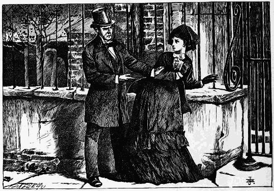
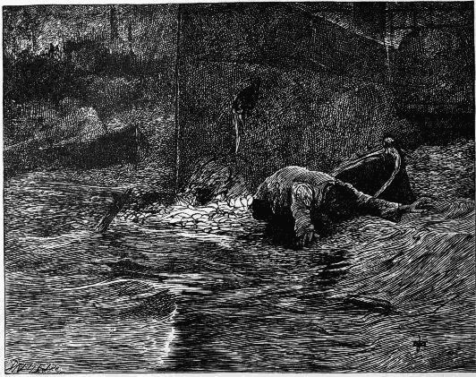
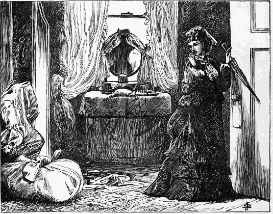
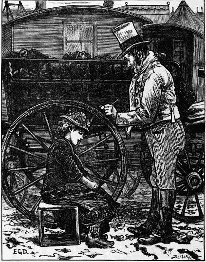
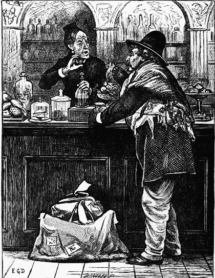
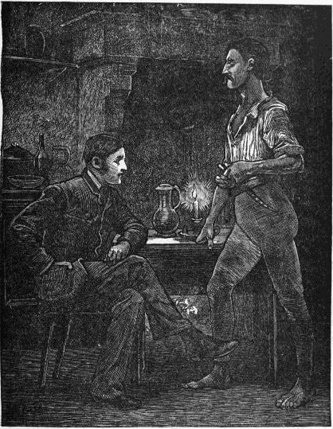
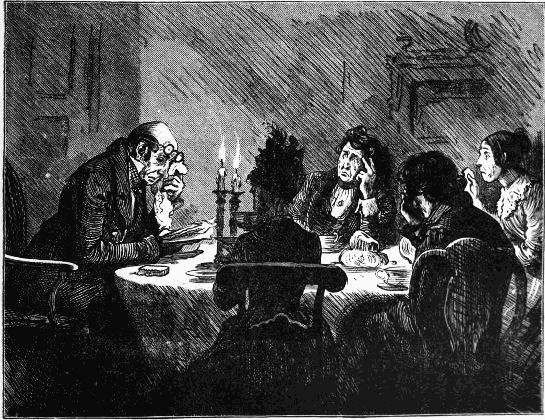
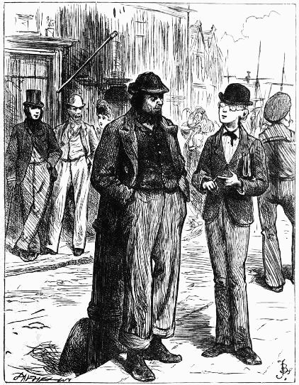

And now, as the man held out the bottle to fill all round, Riderhood stood up, leaned over the table to look closer at the knife, and stared from it to him—Book 2, chap. xii.
And now, as the man held out the bottle to fill all round, Riderhood stood up, leaned over the table to look closer at the knife, and stared from it to him—Book 2, chap. xii.
Yet the cold was merciful, for it was the cold night air and the rain that restored me from a swoon on the stones of the causeway—Book 2, chap. xiii.
 The dark look of hatred and revenge with which the words broke from his livid lips . . . made her so afraid of him that she turned to run away. But he caught her by the arm—Book 2, chap. xv.
Mrs. Lammle, on a sofa by a table, invites Mr. Twemlow's attention to a book of portraits in her hand—Book 2, chap. xvi.
It was an edifying spectacle, the young man in his easy chair taking his coffee, and the old man, with his grey head bent, standing awaiting his pleasure—Book 3, chap. i.
"It's summat run down in the fog"—Book 3, Chap. ii. 
"Oh, indeed, sir! I fancy I can guess whom you think that's like"—Book 3, chap. iv.
Jenny twisted her venerable friend aside, to a brilliantly lighted toy-shop window, and said, "Now look at 'em! All my work!"—Book 3, chap. ii.
Feigning to be intent on her embroidery, she sat plying her needle until her busy hand was stopped by Mrs. Boffin's hand being lightly laid upon it—Book 3, chap. v.
 "He can never be going to dig up the pole!" whispered Venus as they dropped low and kept close—Book 3, chap. vi.
"He can never be going to dig up the pole!" whispered Venus as they dropped low and kept close—Book 3, chap. vi.
"There'll shortly be an end of you," said Wegg, threatening it with the hat-box, "Your varnish is fading"—Book 3, chap. vii.
Lizzie Hexham very softly raised the weather-stained grey head, and lifted her as high as heaven—Book 3, chap. viii.
So they walked, speaking of the newly-filled-up grave, and of Johnny, and of many things—Book 3, chap. ix.
"And you see, as I was saying, Mortimer," remarked Eugene aloud with the utmost coolness, as though there were no one within hearing but themselves, "and you see, as I was saying—undergoing grinding torments"—Book 3, chap. x.
She shook that emphatic little forefinger of hers in his face, at parting, as earnestly and reproachfully as she had ever shaken it at her grim old child at home—Book 3, chap. xiii.
Mr. Venus produced the document, holding on by his usual corner. Mr. Wegg, holding on by the opposite corner, sat down on the seat so lately vacated by Mr. Boffin, and looked it over—Book 3, chap. xiv.
"You have been a pleasant room to me, dear room! Adieu! We shall never see each other again"—Book 3, chap. xv. 
The Cherub, whose hair would have done for itself under the influence of this amazing spectacle, what Bella had just now done for it, staggered back into the window seat from which he had risen, and surveyed the pair with his eyes dilated to their utmost—Book 3, chap. xvi.
"Now, Dolls, wake up!" "Mist Wrayburn! Drection! Fifteen Shillings!"—Book 3, chap. xvii.
Rogue Riderhood recognised his "t'other governor," Mr. Eugene Wrayburn—Book 4, Chap. i.
There were actually tears in the bold woman's eyes as the soft-headed and soft-hearted girl twined her arms about her neck—Book 4, chap. ii
It was a pleasant sight, in the midst of the golden bloom, to see this salt old gruff and glum waving his shovel hat at Bella, while his thin white hair flowed free, as if she had once more launched him into blue water again—Book 4, chap. iv.
"There!" said Bella, when she had at last completed the final touches. "Now you are something like a genteel boy! Put your jacket on and come and have your supper."—Book 4, chap. v.
He had sauntered far enough. Before returning to retrace his steps, he stopped upon the margin to look down at the reflected night—Book 4, chap. vi.
When the bather had finished dressing, he kneeled on the grass, doing something with his hands, and again stood up with his bundle under his arm. Looking all around him with great attention, he then went to the river's edge, and flung it in as far, and yet as lightly, as he could—Book 4, chap. vii.
She took the liberty of opening an inner door, and then beheld the extraordinary spectacle of Mr. Fledgeby in a shirt, a pair of Turkish trousers, and a Turkish cap, rolling over and over on his own carpet, and spluttering wonderfully—Book 4, chap. viii.
Miss Jenny gave up altogether on this parting taking place between the friends, and sitting with her back towards the bed in the bower made by bright hair wept heartily though noiselessly—Book 4, chap. vii.
Bella's husband stepped softly to the half-door of the bar and stood there—Book 4, chap. xii.
"It looks as if the old man's spirit had found rest at last; don't it!" said Mrs. Boffin—Book 4, chap. xiii.
Bradley hesitated for a moment, but placed his usual signature, enlarged, upon the board—Book 4, chap. xv.
"There, there, there!" said Miss Wren, "for goodness' sake stop, giant, or I shall be swallowed up alive before I know it"—Book 4, chap. xvi.
Riderhood went over into the smooth pit backwards, and Bradley Headstone upon him—Book 4, chap. xv.
TWENTY-THREE ILLUSTRATIONS
BY E. G. DALZIEL
"I'm only a common soldier, sir," said he. "It signifies very little what such a poor brute comes to"—Seven Poor Travellers, chap. ii.
And when the visitor (oppressed with pie) had fallen asleep, this wicked landlord would look softly in with a lamp in one hand and a knife in the other, would cut his throat, &c.—Holly Tree Inn, First Branch.
"My dear Captain Kavender," says he. "Of all the men on earth, I wanted to see you most. I was on my way to you"—The Wreck of the Golden Mary—The Wreck
"O Christian George King sar berry sorry!" says the Sambo vagabond—The Perils of Certain English Prisoners, chap. i.
A grizzled personage in velveteen, with a face so cut up by varieties of weather that he looked as if he had been tattooed, was found smoking a pipe at the door of a wooden house on wheels—Going into Society
An imperturbable and speechless man, he had sat at his supper, with Streaker present in a swoon—The Haunted House, The Mortals in the House
"Might you be married now?" asked the Captain when he had some task with this new acquaintance. . . . "Not yet." . . . "Going to be?" said the Captain. . . . "I hope so"—A Message from the Sea, chap. i.
"What is your name, sir, and where do you come from!" asked Mr. Mopes the hermit—Tom Tiddler's Ground, chap. i.
"But it is not impossible that you are a pig!" retorted Madame Bouclet—Somebody's Luggage, chap. ii.
"I am glad to see you employed," said Mr. Traveller. . . . "I am glad to be employed," returned the tinker-Tom Tiddler's Ground, chap. vii.
Willing Sophy down upon her knees scrubbing early and late and ever cheerful but always smiling with a black face—Mrs. Lirriper's Lodgings, chap. i.
"Come, sir! Remove me to my vile dungeon. Where is my mouldy straw!"—Mrs. Lirriper's Legacy, chap. i.
 And at last sitting dozing against a muddy cart wheel, I come upon the poor girl who was deaf and dumb—Dr. Marigold
 While I was speaking to him, I saw it open, and a man look in, who very earnestly and mysteriously beckoned to me—Two Ghost Stories, I.
While I was speaking to him, I saw it open, and a man look in, who very earnestly and mysteriously beckoned to me—Two Ghost Stories, I.
"I took you for some one else yesterday evening. That troubles me"—Two Ghost Stories, II.
"What would you do with twopence, if I gave it you!" . . . "'Pend it"—Mugby Junction, chap. ii.
 Cotched the decanter out of his hand, and said "Put it down, I won't allow that!"—Mugby Junction, chap. iii.
"It's from the best corner of our best forty-five-year-old bin," said Mr. Wilding. . . . "Thank you, sir," said Mr. Bintry. "It's most excellent"—No Thoroughfare, Act i.
"We are famous for the growth in this vault, aren't we!"—No Thoroughfare, Act i.
 "If there had been a wrestle with a robber, as I dreamed," said Obenreizer, "you see I was stripped for it." . . . "And armed too," said Vendale, glancing at his girdle—No Thoroughfare, Act iii.
He became roused to the knowledge that Obenreizer had set upon him, and that they were struggling desperately in the snow—No Thoroughfare, Act iii.
At the side door of the church are the same two men from the Hospice—No Thoroughfare, Act iv.
[552]
[553]
TWELVE ILLUSTRATIONS
BY SIR LUKE FILDES, R.A.
In the court—Chap. i. 
Under the trees—Chap. iii.
At the piano—Chap. vii.
On dangerous ground—Chap. viii.
Mr. Crisparkle is overpaid—Chap. x.
Durdles cautions Mr. Sapsea against boasting—Chap. xii.
"Good-bye, Rosebud, darling!"—Chap. xiii.
Mr. Grewgious has his suspicions—Chap. xv.
Jasper's sacrifices—Chap. xix.
Mr. Grewgious experiences a new sensation—Chap. xx.
Up the river—Chap. xxii.
Sleeping it off—Chap. xxiii.
[560]
[561]
TWENTY-EIGHT ILLUSTRATIONS
BY FRED BARNARD
If he weakly showed the least disposition to hear it, Captain Porter, in a loud sonorous voice, gave him every word of it—Book 1, chap. ii.
One of whom told us she "had no money for beggar boys"—Book 1, chap. iii.
Jack Straw's Castle, memorable for many happy meetings in coming years—Book 2, chap. i.
"It a'nt a smokin' your way, sir, I says;" he says, "No more it is, coachman, and as long as it smokes anybody else's way, it's all right and I'm agreeable"—Book 2, chap. viii.
If you could but know how I hated one man in very dirty gaiters, and with very protruding upper teeth, who said to all comers after him, "So you've been introduced to our friend Dickens—eh!"—Book 3, Chap. ii.
He looked up at me; gave himself an odd, dogged kind of shake; and fixed his eyes on his book again—Book 4, chap. iv.
He is perhaps the most horrible bore in the country—Book 3, chap. v.
Visit to a tramps' lodging-house—Book 3, chap. viii.
Genoese washerwomen—Book 4, chap. v.
The Radicofani Wizard—Book 4, chap. vii.
"I say, what's French for a pillow!" "Is there any Italian phrase for a lump of sugar! Just look, will you!" "What the devil does echo mean! The garsong says echo to everything"—Book 4, Chap. vi.
Neapolitan lazzaroni—Book 4, chap. vii.
 Reading "Dombey" at the snuff shop—Book 5, chap. vii.
"I have never been able to see what they are, because one of the old ladies always sits before them; but they look, outside, like very old backgammon boards"—Book 5, chap. iv.
"Halloa, Mrs. Gamp, what are you up to!"—Book 6, chap. i
Off Yarmouth—Book 6, chap. vi.
Likewise an old man who ran over a milk-child rather than stop!—with no neckcloth, on principle; and with his mouth wide open to catch the morning air—Book 6, chap. vi.
Bye and bye I came upon a polenta-shop in the clouds, where an old Frenchman with an umbrella like a faded tropical leaf (it had not rained in Naples for six weeks) was staring at nothing at all, with a snuff-box in his hand—Book 7, chap. iii.
"C'est vrai donc," says the Duke, "Que Madame la Duchesse n'est plus!" . . . "C'est trop vrai, Monseigneur." . . . "Tant mieux," says the Duke, and walks off deliberately, to the great satisfaction of the assemblage—Book 7, chap. v.
A warm corner in the pig-market at Boulogne—Book 7, chap. v.
Whenever he felt Toots coming again, he began to laugh and wipe his eyes afresh; and when Toots came once more, he gave a kind of cry, as if it were too much for him—Book 8, chap. iv.
He . . . slightly cocked up his evil eye at the goldfinch. Instantly a raging thirst beset that bird; and when it was appeased he still drew several unnecessary buckets of water, leaping about his perch and sharpening his bill with irrepressible satisfaction—Book 8, chap. v.
 The uneducated father in fustian and the educated boy in spectacles—Book 9, chap. v.
Sam Weller in Sierra Nevada—Book 9, chap. viii.
In a transport of presence of mind and fury, he instantly caught him up in both hands, and threw him over his own head out into the entry, where the check-takers received him like a game at ball—Book 10, chap. ii.
"I beg your pardon, sir," he answered, "but if it hadn't been for my pipe, I should have been nowhere"—Book 11, chap. iii.
"In a miserable court at night," says Mr. Fields, "we found a haggard old woman blowing at a kind of pipe made of an old ink-bottle"—Book 1, chap. xii.